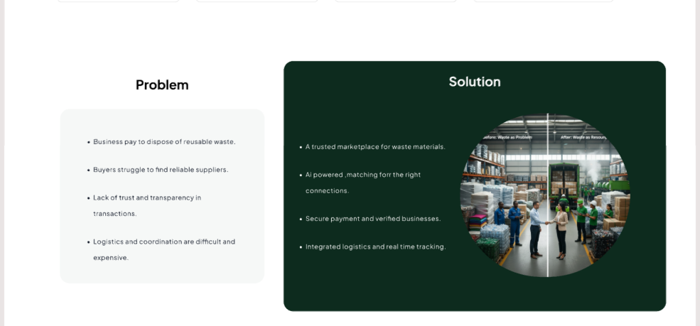
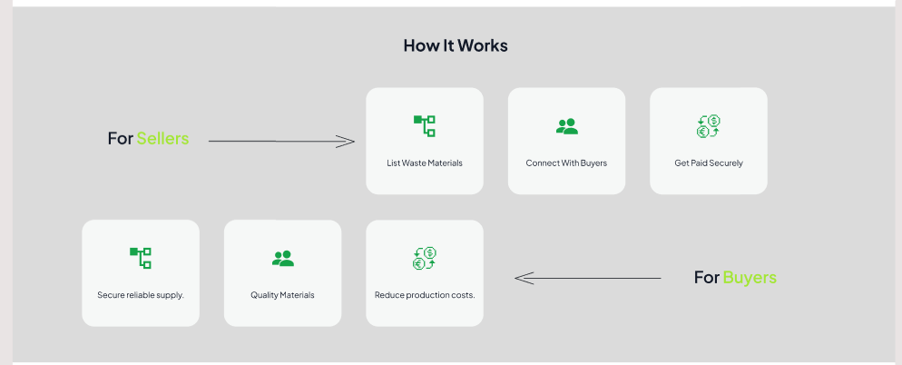
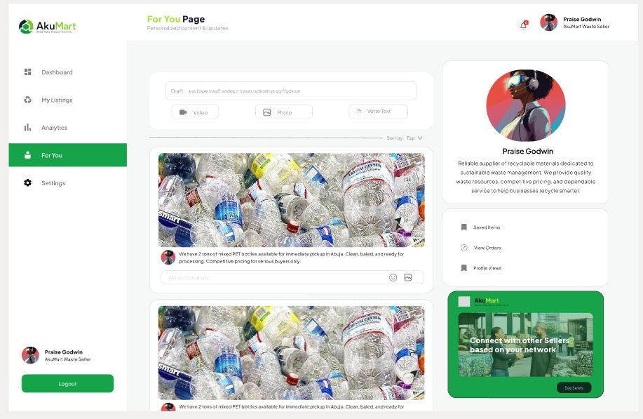
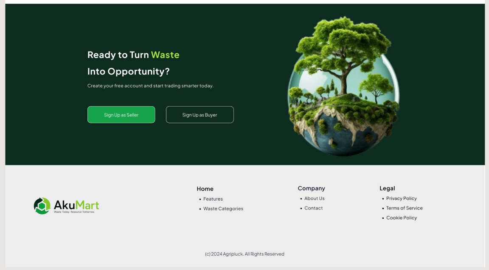

AkuMart
B2B Marketplace for Waste & Recycled Materials

Project Overview
AkuMart is a B2B marketplace for trading waste and recycled materials across Nigeria. It connects businesses that have reusable materials with buyers who need reliable supply. The design covers the marketing landing page and a seller dashboard built around a feed, listings, analytics and a profile.
The Problem
- Businesses pay to dispose of reusable waste.
- Buyers struggle to find reliable suppliers.
- Lack of trust and transparency in transactions.
- Logistics and coordination are difficult and expensive.
The Solution
- A trusted marketplace for waste materials.
- AI-powered matching for the right connections.
- Secure payment and verified businesses.
- Integrated logistics and real-time tracking.
How It Works
For Sellers
- List Waste Materials: Fast, itemized listings of scrap, plastics, and recyclable items.
- Connect With Buyers: Match with verified industrial processors.
- Get Paid Securely: Guaranteed milestone escrows upon delivery.
For Buyers
- Secure Reliable Supply: Continuous feedstock for production plants.
- Quality Materials: Verified batches with grade specifications.
- Reduce Production Costs: Direct sourcing without intermediaries.
My Role
UI/UX design: landing page structure, marketplace messaging, and the seller dashboard (feed, listings, analytics and profile).
Key Focus
Two Audiences, Two Clear Journeys
Separate value propositions and intuitive onboarding pathways engineered specifically for waste sellers and industrial buyers.
Trust Built Into the Interface
Verified business badges, transparent seller profiles, and escrow-backed payments placed prominently throughout the journey.
A Familiar Seller Dashboard
A feed-style "For You" experience coupled with straightforward inventory management, real-time analytics, and quick messaging.
Sustainable Visual Language
A calming green aesthetic, modern typography, and clean iconography tailored to an eco-conscious circular economy.
Marketplace & Dashboard Screens
Marketing landing page hero with value proposition and marketplace metrics

Problem vs. Solution presentation framing waste reduction opportunity

Dual onboarding workflows: Seller listing and Buyer acquisition paths

Interactive seller dashboard: live materials feed, saved items, orders, and network suggestions

Closing conversion section encouraging sellers and buyers to register